判別分析
Discriminant-Analysis
概要
「フィッシャーのアヤメ」ともいわれるアヤメのデータは1936年にサー・ロナルド・エイルマー・フィッシャーによって発表された多変量データです。 このデータはよく分類システムの説明のために使われます。 3種類のアヤメ(iris setosa, iris virginica,iris versicolor)について50個のサンプルから成るデータセットを用意しています。 各サンプルは、花弁とがくの長さと幅の計4つの特徴を計測され、センチメートルで記録されています。 判別分析を使ってこの4つの特徴をもとに種の判別を行いたいと思います。
無作為に120行のアヤメのデータを選択し、判別分析のモデルを作成します。そして残りの30行を使用してこのモデルの精度を検証します。
必要なOriginのバージョン: OriginPro 8.6 SR0以降
判別分析
- 新しいプロジェクトまたは新しいワークブックを開きます。 \Samples\Statistics\Fisher's Iris Data.datファイルをインポートします。
- 列Aから列Dを選択し、メニューから統計：多変量解析：判別分析と操作して判別分析discrimダイアログを表示し、入力データ タブを開きます。A～D列は自動的にトレーニングデータとして反映されています。
- トレーニングデータのグループの右にある三角形ボタンをクリックして、コンテキストメニューからE(Y):Speciesを選択します。
- 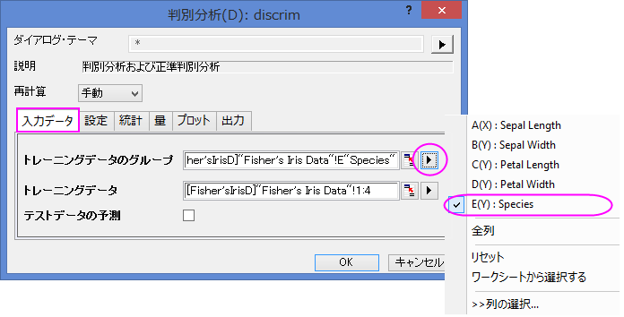
- 量タブを開いて、判別関数の係数にチェックを付けます。正準判別分析のブランチを広げ、正準判別関数の係数にチェックを付けます。他はデフォルトのまま、OKボタンをクリックします。
- 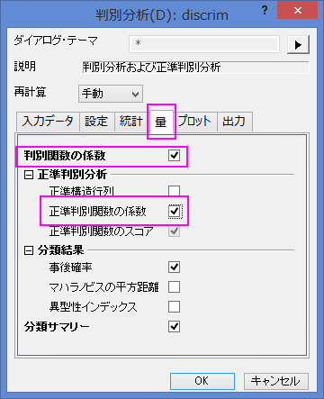
結果の解釈
判別分析結果のタブをクリックします。
正準判別分析
正準判別分析はモデルの判別関数を作成するために使用されます。
- 標準化されていない正準係数の表より、正準判別関数を作成することができます。
- 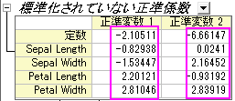
- 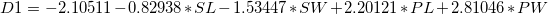
- 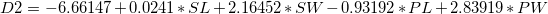
- ここで、SL = Sepal Length, SW = Sepal Width, PL = Petal Length, PW = Petal Width
- 固有値の表から、上記の正準判別関数の重要性が分かります。 1つ目の関数は99.12%の分散を示し、2つ目の関数で残りの0.88%の分散を示しています。
- 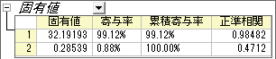
- Wilk's Lambda検定の表では判別関数が有意にグループメンバーシップの説明をしていることを確認できます。 表の中で列Sig.を確認すると、どちらも0.05より小さくなっています。 したがって、判別分析においてどちらの値も含まれるべきであることが分かります。
- 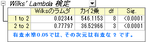
分類
- トレーニングデータの分類概要の表は判別モデルを評価するのに使うことができます。表によると、setosa群の分類は100%正しいといえます。 versicolorは、2つの観測値が誤ってvirginicaと分類され、virginicaでは1つの観測値のみ誤って分類されました。エラー率はたったの2.00%です。 このモデルはよくできているといえるでしょう。
- 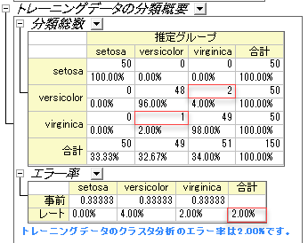
- どの観測値が誤って分類されているかを確認するために、Training Result1のシートに移ることが出来ます。このシートでは、判別モデルから計算された事後確率と、観測値が割り当てられたグループを確認できます。
- 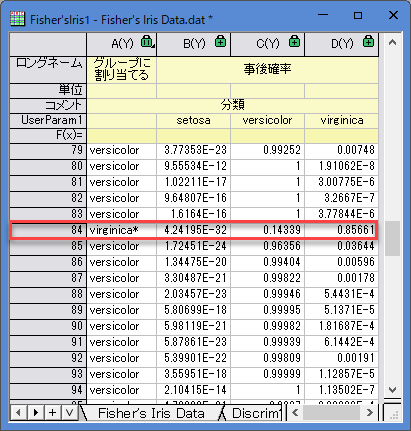
- 84番目の観測値では、virginicaの0.85661が事後確率として最大値であることがわかります。よって、約85.7%の確率でvirginicaのグループに割り当てられます。
- しかし、84番目の観測値はversicolorのグループに割り当てられるはずです。つまり、この観測値はモデルによって誤って分類されたということになります。
モデルの検証
モデルの検証は判別分析分類器の安定性を保証にするために使われます。
モデルの検証方法には2つあります。
- 交差検証
- 交差検証では、どのグループに分類すべきか判断するためのデータを除いて、その他のトレーニングデータをテストデータとして扱い、分類が正しいかそうでないかを確認します。
- サブセット検証
- 観測値のセットを無作為にサブセットへ分割し、最初のサブセット(トレーニングセット)を判断モデルの判断に使い、次のサブセット(テストセット)を結果の信頼性を検証するのに使います。
データ分析の準備
無作為に選択したデータをソートにかけ、最初の120行のデータをトレーニングデータとして、最後の30行のデータをテストデータとして使います。
- Fisher's Iris Dataのワークシートに戻ります。
- 新しく列を追加して、正規乱数を追加します。(列ヘッダを右クリックし、列値の一律設定：正規乱数を選択）
- 新しく追加した列を選択します。 右クリックして、ショートカットメニューからソート(ワークシート)：昇順を選びます。
| Notes: Originは正規乱数として毎回ランダムに数値を入力するので、毎回結果が変わります。
このチュートリアルと同じ結果を得るには、Samplesフォルダ内にあるTutorial Data.opjを開き、プロジェクトエクスプローラでDiscriminant Analysis (Pro Only)サブフォルダを開きます。その中にあるFisher’s Iris Dataワークシートの列Fのデータを使用します。
|
判別分析を実行する
- A～D列を選択します。
- 統計：多変量解析：判別分析と選択し、判別分析ダイアログを開きます。
- A～D列の最初の120行分のデータをトレーニングデータとして設定するために、トレーニングデータの隣にある三角形ボタンをクリックして、コンテキストメニューから列を選択…を選びます。
- 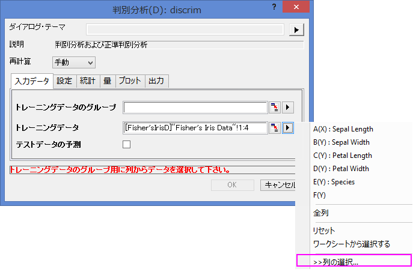
- 列ブラウザダイアログで下のパネルにある ... ボタンをクリックします。 データの範囲を1から120に設定します。OKをクリックします。
- 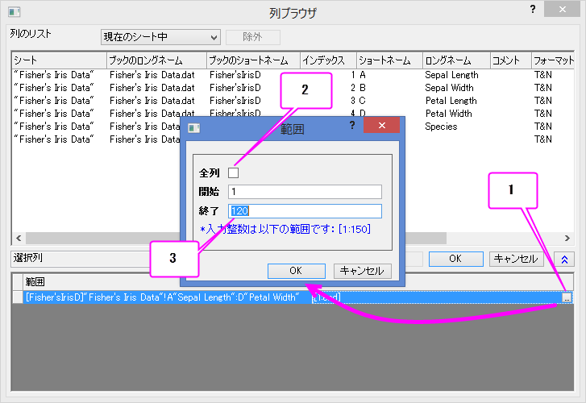
- 列Eの始めの120行をトレーニングデータのグループに設定するために、トレーニングデータのグループの隣にある三角形ボタンを押して、コンテキストメニューからE(Y): Speciesを選びます。もう一度トレーニングデータのグループの三角形ボタンをクリックし、コンテキストメニューから列の選択…を選び、列ブラウザダイアログで下のパネルにある…ボタンから範囲ダイアログで1から120に設定します。 OKをクリックします。
- テストデータの予測のチェックボックスにチェックを付けます。テストデータのインタラクティブボタン
 をクリックします。ダイアログを縮小します。 ワークシートのA～D列を選択します。再度インタラクティブボタンをクリックしてダイアログを開きます。列ブラウザを開くために三角形ボタンをクリックしてからコンテキストメニューで列の選択…を選びます。下のパネルの…ボタンをクリックして、範囲を121から150に設定します。
をクリックします。ダイアログを縮小します。 ワークシートのA～D列を選択します。再度インタラクティブボタンをクリックしてダイアログを開きます。列ブラウザを開くために三角形ボタンをクリックしてからコンテキストメニューで列の選択…を選びます。下のパネルの…ボタンをクリックして、範囲を121から150に設定します。
- 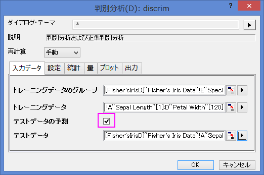
- 設定タブを開いて、交差確認にチェックを付けます。OKをクリックします。
- 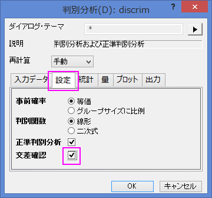
交差検証
- Discriminant Analysis Report1ワークシートに移動します。トレーニングデータの交差検証概要の表では、モデル計算から除外しながらそれぞれのケースを分類することにより事前エラー率を提供しています。しかし、この方法ではサブセット検証よりも楽観的なままとなっています。
- 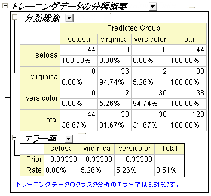
サブセット検証
- テストデータの分類概要の表では、テストデータがどのように分類されているかが分かります。
- 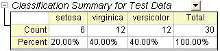
- Fisher's Iris Dataのワークシートで、列E/Speciesの最後の30行（121から150）をコピーします。
- TestResultのワークシートに、1列（列E）を追加します。 新しく作成した列にコピーした内容を貼り付けます。
- ワークシートに新しい列（列F）を追加し、右クリックして“列値の設定”をコンテキストメニューから選びます。開いたダイアログでCompare(col(A),col(E))と入力します。そしてＯＫをクリックします。
- 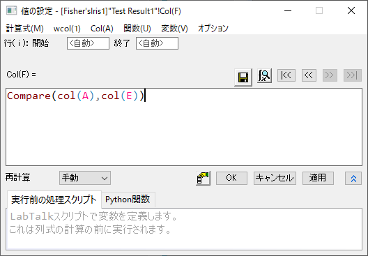
- 30行のデータで0と表示されるのはありません。つまり、テストデータのエラー率は0ということを示しています。この判別モデルはとても良いといえるでしょう。
事前確率の修正
判別分析はグループメンバーシップの事前確率は同一と仮定しています。グループの集団の大きさが等しくなければ、事前確率は異なるかもしれません。この場合、事前確率オプションにグループの大きさに比例することを利用できます。
- Discrim2のワークシートに移動し、トレーニングデータの交差検証概要にあるエラー率の事前行はグループごとにメンバーシップの事前確率を示しています。3グループとも確率がほぼ等しくなることが想定されます。グループの大きさによって事前確率を調整することで、全体の分類率も改善できます。
- 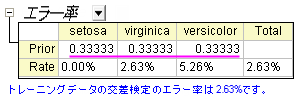
- ボタンをクリックし、コンテキストメニューからパラメータを変更をクリックします。事前確率ラジオボタンのグループサイズに比例を選択します。OK ボタンをクリックします。
- 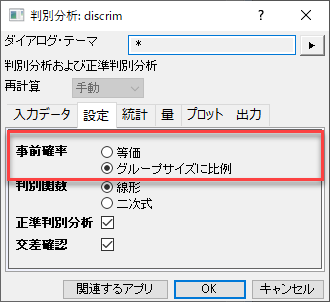
- 分類エラー率は2.50%である事が分かり、事前確率が等しい場合のエラー率2.63%よりも良い値です。
- 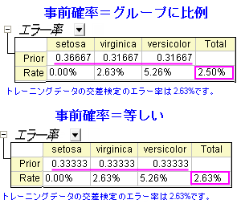